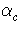
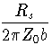
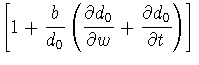
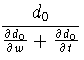

I have done a little searching in the library, and I have found references for some previous calculations that are essentially the same as the ones I did for the equivalent diameters of rectangular cross section conductors.
The basic transformation for the self impedance equivalent diameter was written down in 1929 by W.G. Bickley, Two Dimensional Problems Concerning a Single Closed Boundary, Phil. Tran. 228A, 235 (1929). He describes the conformal mapping and the result but doesn't actually write down the result.
Seymour B. Cohn, Problems in Strip Transmission Lines, IRE Transactions on Microwave Technology and Techniques, 3, 119 (1955), uses the result for the self impedance equivalent diameter to calculate the equivalent resistance diameter by taking the derivative numerically. He apparently thought the analytic calculation was too difficult, but that obviously isn't true since I was able to do it. The Bickley result had apparently been reinvented and tabulated by C. Flammer for a Stanford Research Institute report. Cohn was also at the Stanford Research Institute so he had easy access to this report. Most of these reports were not publically available since they were generally done under contract. Cohn also cites (his reference 8) that the results were published by N. Marcuvitz, Waveguide Handbook, M.I.T. Radiation Laboratory Series, Vol. 10, McGraw-Hill, 1951. Sure enough, the elliptic function results for the self impedance diameter are calculated for the effective diameter of rectangular cross section obstructions in waveguides.
You can verify that Cohn's graphs of the two effective diameters are the same as the ones I calculated. His d0 graphed in figure 2 is my dself . By looking at his Eq. 19 for the attenuation of microstrip with a rectangular cross section conductor,
|  =  | (1) |
| dresistance = . | (2) |
Cohn's graph in figure 4 is therefore the ratio d0/dresistance . Here's a quick comparison of my calculations and Cohn's results showing they are identical to the extent I can read the graphs.
| t/w = d''/d' | Figure 2 | my dself | Figure 4. | Figure 2/Figure 4 | my dresistance |
| 1.0 | 1.18 | 1.18 | 1.18 | 1.0 | 1.0 |
| 0.5 | 0.875 | 0.875 | 1.195 | 0.732 | 0.732 |
| 0.2 | 0.672 | 0.672 | 1.256 | 0.535 | 0.535 |
| 0.1 | 0.595 | 0.595 | 1.330 | 0.447 | 0.449 |
| 0.05 | 0.55 | 0.553 | 1.412 | 0.390 | 0.391 |